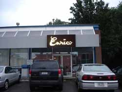
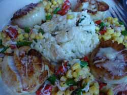

Mom eats at Enrico's Ristorante

I know it’s been several days since I’ve posted anything; meals have been either unmemorable or repeat visits to restaurants I’ve already written about, like the Rose Tea Café. Tonight, though, we ate at a place we’ve only been to a couple of times before and keep forgetting about, even though we live quite nearby: Enrico’s Ristorante. Enrico’s is located in an unprepossessing strip of shops in a small commercial area of Pittsburgh; it is a café that is connected to a biscotti bakery of the same name in the Strip district (Pittsburgh’s wholesale produce area). Some people love Enrico’s biscotti, but I am not one of them. I think they are too big and tough and I don’t really like the flavors, either; I like the idea of their biscotti better than the cookies themselves. I make much better biscotti myself from a recipe in Alice Waters’s Chez Panisse Cookbook, which I’ll probably post sometime before Christmas. The restaurant, however, is lovely inside and serves simple, yet creative food utilizing local and regional produce, meats, and cheeses.

Poppy ordered the panzanella salad with linguine and mussels to follow, while I had the house salad (mixed greens with walnuts and dried cranberries) followed by seared scallops which were served with basil risotto and a strange little corn and crab relish. We both enjoyed our dinners immensely, there were no restaurant incidents to spoil the evening, and we were even able to save some money using the card from our Entertainment Book .
Comments
So glad to hear that little place is worth visiting. I’ll be looking forward to your biscotti recipe.
interesting report on enricos . . . i have not been. what is that on top of the scallops? is it cheese?
i didn’t post on a repeat visit to tram’s on penn ave. the food was even better than i remembered it and they’ve changed the seasonal plastic tablecloths (summer fruit, as oppposed to xmas).
here’s my old post. Voila.
this time, we got an appetizer labelled “mixed vegetables” that was cabbage, cukes, onion, carrot and chicken in a sweet, vinegary sauce with peanuts. although the ingrediants looked similar to those in a rice vermicelli dish the taste was different, distinct and very delicious (maybe more pickle-y?). i just ate the leftovers for breakfast. good with coffee . . .
No, zp, not cheese! Never cheese with seafood; it was some kind of innocuous, slightly creamy little sauce, but I forget what they called it.
We love Tram’s and I would regularly pick my husband up from his office in Oakland, zip across the Bloomfield bridge, and we’d have lunch there. We usually eat the beef pho. But the last couple of times we went it was so crowded and took so long to get our lunch that he was late getting back to the office. Perhaps it is a better dinner option, and I will give that noodle dish a try.
Those both sound like delicious meals. That crab and corn thing sounds particularly interesting.
I agree in a general way about no cheese on seafood, but let’s please remember Jacques Pépin’s fabulous scallop soufflé with gruyère.
That is a crazy-looking plate of food. I’m glad that a good restaurant moved into that depressing, awkward little mall at the end of Walnut Street.
Actually, Leland, Enrico’s is located in that little group of shops on Ellsworth Avenue; it used to be La Charcuterie or something, where the Japanese grocery store is. From the photo is does look like the Walnut St. mall, but don’t those shopping strips all look alike, though?
Somehow, the whole idea of scallop souffle doesn’t appeal to me. I just wouldn’t do that to scallops, mix them with egg and cheese and all that glop.
yeah. i’m not one for cheese (or even certain creamy “glop” prepartions) and the delicate creatures of the sea. i was just checking before i approached the restaurant.
oh wait, i love leftover lobster in wet scrambled eggs.
and i liked your recent report on tram’s. we sat next to a large and somewhat annoying party the last time we were there – son was explaining to parents, table, entire restaurant what prix fixe was. when it occured to him that his parents (and the rest of us) all knew he got embarassed.
Enrico’s Ristorante in shadyside is not a partner with Enrico’s biscotti in the strip.
The rest. on ellsworth is owend by Herm Tomer
and run by Eric Leskovar (general manager) & Jason Sicher ( exc. chef)
thanks
Eric Leskovar
Add a comment